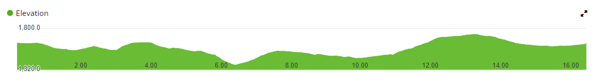

Experience the beauty of Golija through a unique and challenging trail run.
The GolijaTrail 2024 running course spans a total distance of 50 kilometers, starting and ending at Odvraćenica. The course takes you through diverse terrains including dense forests, open meadows, and rocky paths, offering breathtaking views of the Golija mountain range.
The course includes several checkpoints where runners can refuel, get medical assistance, and check their progress. Below are the main checkpoints:
The height profile of the GolijaTrail 2024 course shows the elevation changes runners will experience. The course features several challenging ascents and descents, adding to the excitement and challenge of the race.
The safety of our participants is our top priority. The following safety measures will be in place: